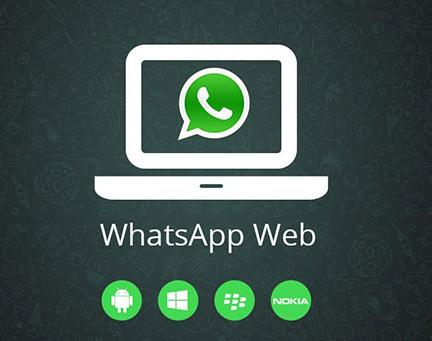

WhatsApp, aplikasi chatting yang punya segudang fitur penting dan tentunya menarik. Dengan fitur-fitur yang dimilikinya ini, aplikasi ini nggak bikin bosen, deh, pokoknya. Walaupun punya segudang fitur, ternyata tidak semua orang tahu secara keseluruhan, mengenai apa saja fitur-fiturnya. Apalagi untuk fitur yang sifatnya cenderung tersembunyi. Salah satu di antaranya adalah fitur WhatsApp Web. Fitur ini bisa kita temukan pada menu Setelan WhatsApp, di bagian kanan atas. Di sana tertulis opsi “WhatsApp Web”.
WhatsApp Web merupakan sebuah fitur WA yang memungkinkan penggunanya bisa melakukan sinkronisasi antara HP dengan komputer atau laptop, melalui browser. Sehingga, Anda bisa mengakses obrolan WhatsApp di komputer. Fitur ini sangat berguna lho, terlebih lagi buat Anda yang banyak menghabiskan waktu menggunakan laptop atau komputer. Namun sayangnya, belum begitu banyak orang yang sudah mengetahui fungsi dari WA Web ini. Salah satu alasannya, mungkin karena memang fitur ini agak jarang dipakai. Apalagi masih banyak orang yang jarang menggunakan komputer dalam waktu lama, khususnya di Indonesia.
Tapi untuk sebagian orang, WhatsApp Web seharusnya menjadi fitur yang sangat bermanfaat. Alasannya fitur ini bisa membuat waktu kita menjadi lebih efisien jika kita termasuk pengguna aktif laptop atau komputer. Saya sering menggunakan fitur ini, dan itulah manfaat yang saya rasakan sendiri selama ini.
Di setiap platform, tentunya ada beberapa kelebihan dan kekurangan tersendiri saat penggunaannya. Berikut kelebihan dan kekurangan dari WhatsApp Web.
Ada beberapa kelebihan jika Anda menggunakan fitur WhatsApp Web, dibandingkan dengan menggunakan aplikasinya di HP, di antaranya:
Untuk yang pekerjaannya banyak di depan komputer, misalnya mengetik, membuat dokumen, dan lain sebagainya. WhatsApp Web bisa membuat waktu menjadi lebih efisien, karena tidak perlu repot-repot buka HP lagi.
Mengetik menggunakan keyboard di komputer memang relatif lebih mudah dan cepat. Berbeda dengan di HP yang lebih sering salah ketik, alias typo.
WA Web adalah aplikasi berbasis sebuah situs. Kita bisa membukanya melalui browser, sehingga bisa dikatakan sangat ringan dan hemat kuota. Walaupun ada juga sih versi aplikasinya.
Karena WA Web diakses di komputer, Anda bisa mengirimkan dokumen tertentu langsung dari komputer, melalui WhatsApp Web tanpa harus menggunakan email.
Selain memiliki kelebihan, tentu saja WhatsApp Web juga memiliki kekurangan. Beberapa di antaranya adalah sebagai berikut:
Meskipun dibuka melalui komputer, WA Web tidak dapat berjalan sendiri. Fitur ini tetap terhubung dengan HP Anda, yang berarti membutuhkan aplikasi WhatsApp dan koneksi internet di HP.
Karena tetap membutuhkan HP, aplikasi WhatsApp di HP akan tetap berjalan selama Anda mengakses WhatsApp Web. Dengan begitu, fitur ini tetap memakan baterai HP Anda.
Saat menggunakan fitur ini, Anda harus memiliki koneksi internet yang stabil di kedua perangkat (HP dan komputer). Jika salah satu perangkat saja tidak stabil koneksinya, biasanya akan gagal terhubung.
Hingga saat ini, WhatsApp Web belum menyediakan fitur panggilan, baik itu panggilan suara (telepon), maupun panggilan video (video call).
Cara menggunakan WhatsApp Web sangatlah mudah. Yang pertama harus disiapkan adalah sebuah laptop atau komputer, juga HP dengan akun WhatsApp tentunya. Pastikan komputer sudah ter-install aplikasi browser, ya. Bisa pakai apa saja yang Anda suka. Google Chrome misalnya. Untuk cara memakainya, silakan ikuti langkah-langkah berikut:
Pertama, buka browser di komputer Anda, lalu kunjungi situs web.whatsapp.com
Setelah itu, buka aplikasi WhatsApp di HP Anda. Ketuk menu titik tiga di kanan atas, lalu pilih WhatsApp Web.
Nanti di sana akan muncul kamera untuk melakukan scan barcode. Arahkan kamera HP ke barcode yang terdapat di situs WhatsApp Web (komputer).
Kalau sudah, maka Anda akan mendapati tampilan chat WhatsApp. Di sini, WhatsApp Web bisa langsung dipakai.
Mudah kan? Hanya empat langkah saja. Tapi kalau ternyata ada masalah, Anda bisa coba tips-tips berikut ini:
Pastikan internet lancar, baik di HP maupun komputer. Kalau nggak, biasanya prosesnya gagal. Bersihkan kamera kalau proses scanning barcode gagal. Tutup aplikasi WhatsApp di HP > tutup situs WhatsApp Web di komputer > lalu coba ulangi langkah-langkah login WhatsApp Web yang saya jelaskan di atas. Atau, bisa juga coba restart HP dan komputernya.